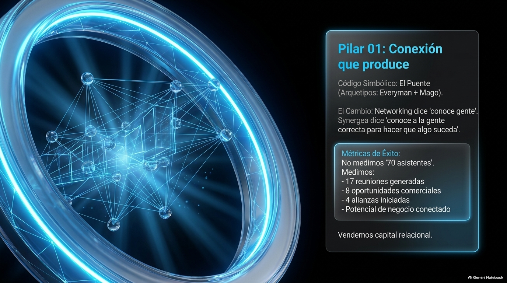
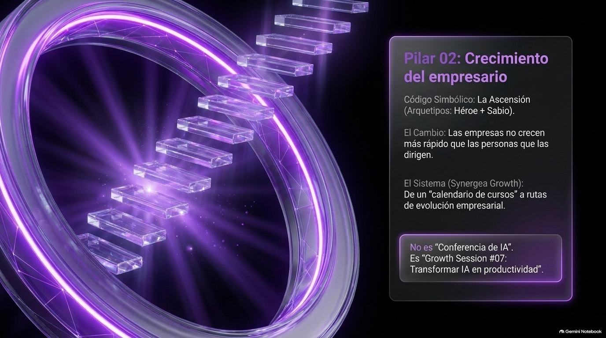
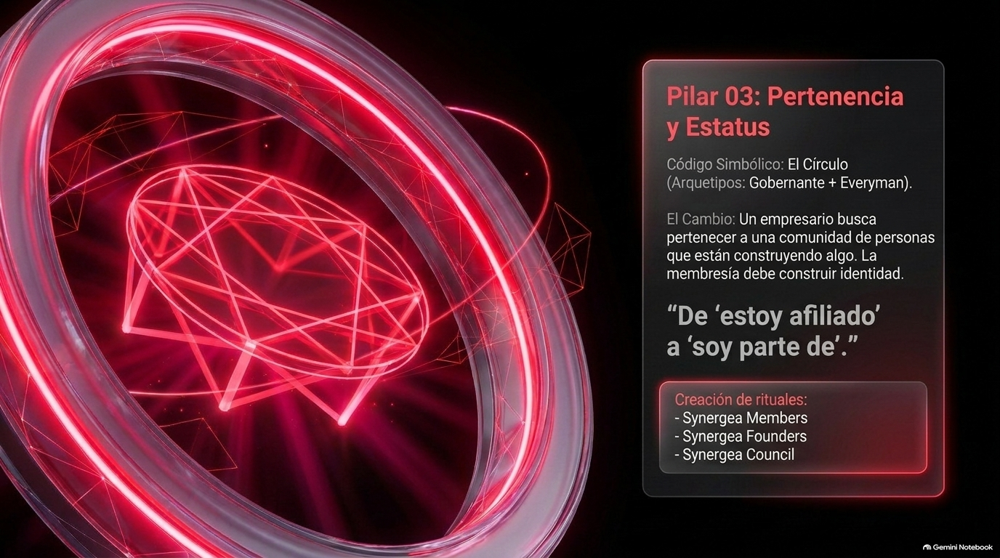

Nos encontramos.
Conocemos a la persona, escuchamos su historia y empezamos a construir confianza.
Detrás de cada negocio, una persona.
Entre nosotros, nuevas posibilidades.
Una conversación que te abre la mirada. Alguien que entiende tu desafío. Una conexión que te impulsa a avanzar. Somos una comunidad empresarial que evoluciona contigo, en persona y a través de la tecnología.
La confianza se construye mirando a los ojos.
Las oportunidades crecen cuando seguimos conectados.
Emprender requiere decisiones.
Crecer requiere conexiones.
Hay días en los que una idea necesita otra mirada. Un proyecto, un aliado. Y una decisión, alguien con quien pensarla. En SynerGEA hacemos espacio para esas conversaciones: compartimos lo que sabemos, escuchamos lo que otros necesitan y construimos confianza con nuestras acciones.
Porque una comunidad cobra sentido cuando cada integrante encuentra cómo aportar y cómo avanzar.
Una conexión abre una puerta.
La comunidad mantiene el camino abierto.

EL PUENTEEl networking comienza al escuchar: qué hace cada persona, qué necesita y qué puede aportar. Desde ahí surgen recomendaciones, alianzas y oportunidades con sentido.

LA ASCENSIÓNCompartir conocimiento nos ayuda a tomar mejores decisiones. La capacitación, el diálogo y el aprendizaje entre pares hacen del crecimiento una práctica continua.

EL CÍRCULOPertenecer es participar, cumplir la palabra y celebrar el avance de los demás. Es encontrar un entorno donde compartir desafíos y ofrecer apoyo forma parte de crecer.
Es una historia.
Una capacidad.
Una posibilidad
para alguien más.
La comunidad toma forma en gestos pequeños: una pregunta que importa, una experiencia compartida, un contacto que llega en el momento oportuno.
Saber que puedes aportar.
Sentir que puedes pedir apoyo.
Más cerca, incluso cuando
no estamos en el mismo lugar.
SynerGEA cuenta con una aplicación para impulsar la interconectividad entre sus integrantes. Es parte de nuestra evolución: ampliar el vínculo de la comunidad más allá del encuentro presencial.
La tecnología tiene sentido cuando acerca personas. Cuando da continuidad a una conversación y abre espacio para seguir construyendo juntos. Nuestra evolución digital conserva lo que nos une: confianza, escucha y reciprocidad.
Descubre nuestra visión ↓Conocemos a la persona, escuchamos su historia y empezamos a construir confianza.
La aplicación impulsa la interconectividad de una comunidad que también se vive en digital.
Evolucionamos con herramientas tecnológicas y conservamos las relaciones humanas como centro.
Los encuentros y desayunos son espacios para reconocer a las personas detrás de cada empresa y escuchar sus proyectos.
La capacitación y el intercambio de conocimientos acercan perspectivas que podemos aplicar a nuestros propios desafíos.
Una recomendación, una conversación de seguimiento o una alianza convierten el encuentro en una relación que vale la pena cuidar.
Tu experiencia puede abrirle una puerta a alguien. La de otra persona puede ayudarte a avanzar. Empieza por reconocer qué quieres compartir y qué conexión te hace falta hoy.
Para empresarios, emprendedores y personas con disposición a compartir y participar.¿Qué buscas en una comunidad?
Presenta tu negocio, comparte qué tipo de colaboración buscas y pregunta qué necesitan los demás.
Lleva contigo una presentación breve para tu próximo encuentro.
Para empresarios, dueños de pymes y emprendedores que buscan relaciones de confianza, aprendizaje y colaboración. La disposición a participar y aportar es parte esencial de la experiencia.
Tu experiencia, conocimiento, atención y capacidad de colaborar. Una comunidad se fortalece con aportaciones distintas, no únicamente con el tamaño de cada empresa.
Escucha, presenta con claridad lo que haces, identifica necesidades comunes y da seguimiento. La confianza se construye con participación y con acciones congruentes.
Sí. SynerGEA cuenta con una aplicación orientada a impulsar la interconectividad entre sus usuarios. El enlace de acceso y sus funcionalidades específicas se confirmarán con la asociación.
En el Estado de México, con foco en Toluca, Metepec y otros municipios de la región. Los detalles de encuentros y condiciones de incorporación se confirman con la asociación.
TU CRECIMIENTO PUEDE SER
EL COMIENZO DEL DE ALGUIEN MÁS.